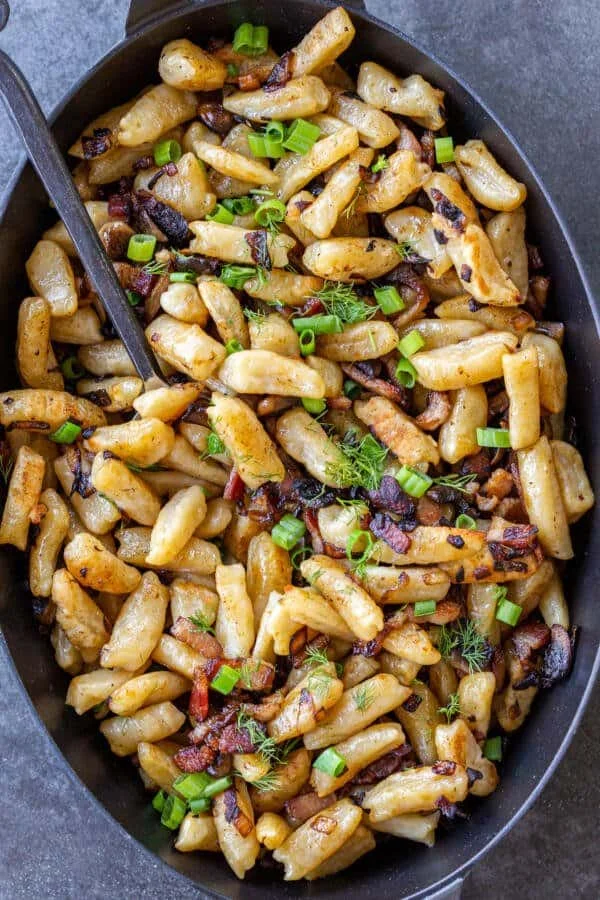

Halushki
Home

Description
Halushki, a popular dish of traditional Ukrainian dumplings, consists of plump flour-based dumplings tossed with pan-fried bacon and veggies.
Typically, it's served in Ukrainian cafes at lunch or dinner time alongside a light salad.
Below, find a high-level overview of the flavor, texture, and cooking time.
Ingredients
- 5 cups flour
- 1 tsp salt
- 4 eggs
- 1 cups water
- 150g Unsalted butter for dough
- 3 tbsp Unsalted Butter for sautéing veggies + dumplings
- 1 lb fresh mushrooms
- 1 cup bacon pieces
- 1 tbsp salt
- 1 tsp black pepper
Steps
- Prepare ingredients for the recipe.
- Place the flour and salt in a large bowl. Make a little well in the middle. Place whisked eggs, water, and melted butter into it. Using a fork, work the ingredients together to form the dough. Finish up combining the ingredients by hand until you get a smooth, even texture.
- Divide the dough into eight even pieces. On a floured surface, roll each piece into a long string. Dice each string into small pieces.
- At this point, you can either freeze the raw dough for later use or move onto the next step to cook them.
- Bring a pot of salted water to a boil. Toss in the raw dumplings and boil them until they float to the top.
Topping Steps
- Gather the topping ingredients.
- Dice mushrooms and sauté them in a buttered skillet for about 5 minutes. Dice the onions and add them to the skillet, cooking them until softened. Season with salt and pepper.
- Stir in bacon pieces, sauté for 5 minutes.
- Place dumplings into a nonstick skillet and add in sautéed mixture and butter. Cook until they turn golden brown.
- Serve immediately and enjoy!